6.4 仓库级计算机的体系结构
一台 WSC 由 50 000～100 000 台计算服务器和存储块组成，它们通过一个分层的网络连接起来。计算设备、存储设备和网络设备都装在机架里，同一个机架中还装有供电设备，如交流—直流电源变换器和备用电池。图 6.6 是谷歌 WSC 中的一个机架。
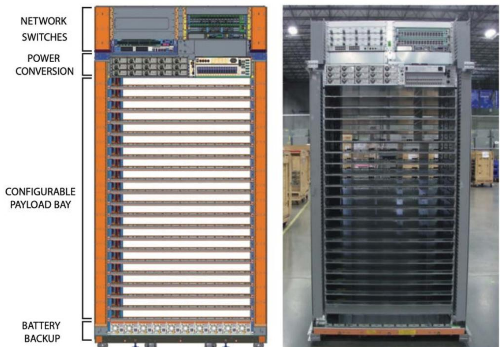
机架的尺寸差别很大。传统机架宽 19 英寸、深 48 英寸；近来的几种设计则做得更浅、更宽，以便每层水平托盘能放下多台服务器。机架高度通常为 70～84 英寸，以机架单元（RU）计量，1 RU = 1.75 英寸 = 4.44 cm。一个机架能装多少台服务器，还受三方面的限制：一是可用的供电能力（例如每个机架 10～30 kW），二是散热和气流条件，三是机架接入网络交换结构的可用带宽。机架在仓库建筑内排成一行一行，如图 6.7 所示。图 6.8 是一个 WSC 园区，园区里有多栋仓库大小的建筑，用来容纳机架以及运行机架所需的电气设备和冷却设备。
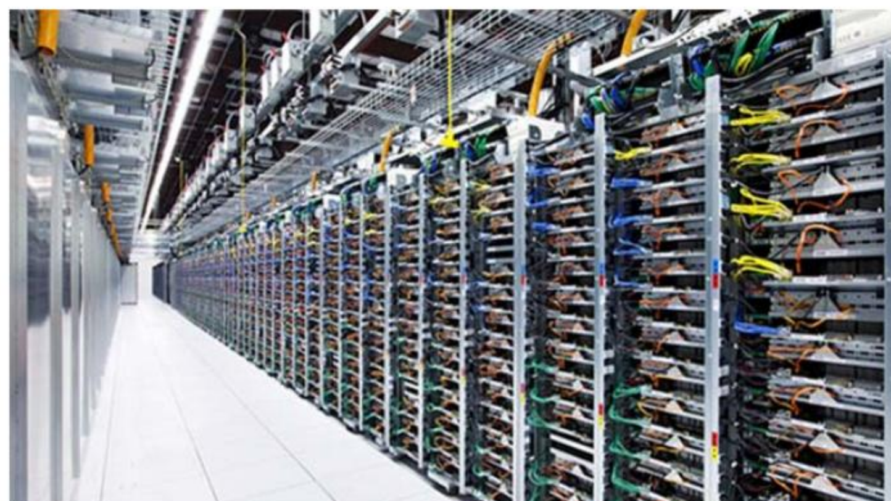
本节介绍 WSC 的计算、存储和网络部件，并从开放计算项目（OCP，Open Compute Project，https://www.opencompute.org/）中选取几个实例重点说明。Meta、谷歌、微软、阿里巴巴等 WSC 运营商自行设计硬件部件，OCP 维护着这些部件的详细规范。供电和冷却设备对 WSC 的运行至关重要，而且是和电子部件协同设计的，这部分内容留到 6.6 节介绍。
WSC 的计算
与传统的企业数据中心相比，WSC 的硬件相对单一，但其中的服务器配置仍有多种。之所以要有这种异构性，主要是为了让硬件的能力和成本与 WSC 关键负载的特点更好地匹配。图 6.9 汇总了 2017 年 Meta 的 WSC 所用的 7 种服务器，以及各种配置所对应的负载。一个机架可以只装一种服务器，也可以混装多种，只要总体上满足供电和冷却的约束即可，所以有些机架并没有装满。仓库的使用年限内，硬件是逐步安装、逐步更换的，因此一个 WSC 中会同时存在好几代服务器和机架。
图 6.9 Meta 的 WSC 所用的 7 种服务器，见 2017 年 OCP 峰会的介绍（https://engineering.fb.com/2017/03/20/networking-traffic/ocp-summit-2017-facebook-news-recap/）。I 型服务器实际上是一个机箱，内装 4 台单插座服务器，共用一个网络接口；其余各型都是双插座服务器，CPU、内存和存储的配置各不相同。IV、V、VII 和 VIII 型把一台双插座服务器与一个或多个存储托盘组合在一起。
| I 型 | III 型 | IV 型 | V 型 | VI 型 | VII 型 | VIII 型 | |
|---|---|---|---|---|---|---|---|
| 用途 | Web 服务 | 数据库 | 数据分析 | 照片 | 多种服务 | 冷存储 | 分离式 Flash |
| CPU | 4 个 Xeon D | 2 个 Xeon E5 | 2 个 Xeon E5 | 2 个 Xeon E5 | 2 个 Xeon E5 | 2 个 Xeon E5 | 2 个 Xeon E5 |
| 内存 | 32 GB | 256 GB | 128 GB | 32 GB | 256 GB | 256 GB | 32 GB |
| 存储 | 1 个 500 GB SATA | 2 个 3.2 TB PCIe Flash | 15 个 5 TB PCIe Flash | 30 个 4 TB SAS HDD | 1 个 1.8 TB PCIe Flash | 240 个 4 TB SATA HDD | 15 个 5 TB SATA/PCIe Flash |
双插座服务器。 图 6.10 是一台 1 RU 的双插座服务器。这是 WSC 中常见的服务器配置，因为它的计算能力和内存容量可以配得恰到好处，能够承担范围很广的应用。服务器的固定成本（金属机壳、主板、风扇、NIC）由两个 CPU 插座分摊，所以这种配置的性价比高，即使把服务器切分开来运行多个小虚拟机（VM），效果也很好。
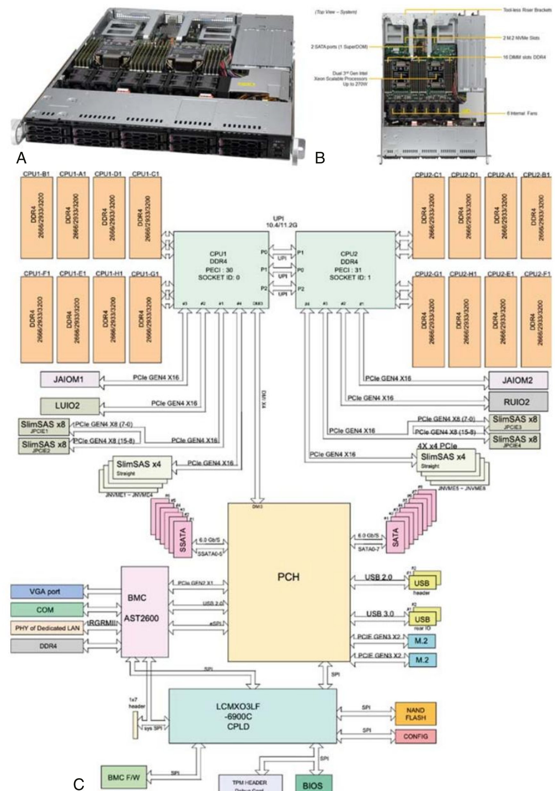
多节点服务器。 还有一些服务器设计在成本和模块化方面更进一步。图 6.11 是 Meta 的 Yosemite 多节点服务器设计。4U 机箱中有 3 个滑架（sled），每个滑架可以插 1～4 块不同配置的服务器刀片。基本配置下，一个滑架装 4 台单插座服务器，顶部还有一块小板，上面是 4 块刀片共用的基板管理控制器（BMC）和 NIC。BMC 负责安全启动、风扇、电压调节器和各种系统传感器；NIC 内含一个 4 路 PCIe 交换器，为每台服务器各提供一个物理上独立的接口来使用 NIC 的资源。
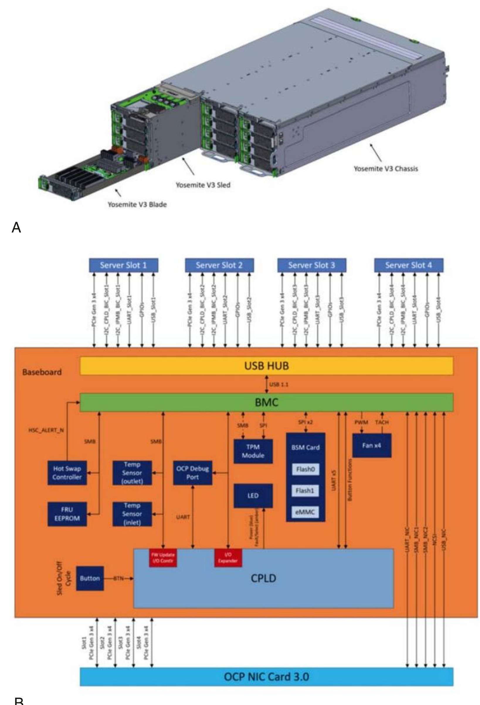
有些负载的会话级并行性充足、内存需求小，如前端 Web 服务器、横向扩展的微服务、中小规模的虚拟机，这种配置对它们来说性价比高。这类负载用两台单插座服务器和用一台双插座服务器，得到的吞吐率相同，因此没有必要使用双插座服务器所需的、更昂贵的 CPU 芯片。Yosemite 设计让多台单 CPU 服务器分摊 BMC 和 NIC 的成本。Yosemite 滑架还可以装其他配置的刀片，包括带共享存储或共享领域专用加速器（DSA）的刀片。
DSA 服务器。 小型 DSA，如用于机器学习推理或视频转码的芯片，可以做成 PCIe 或 M.2 外设板，装在上述服务器中。但是，大型机器学习模型（如大语言模型，LLM）的训练和服务意义重大、规模巨大、计算密集，于是出现了专门部署 DSA 的服务器。这种服务器装有 4～16 块高端 DSA 芯片，每块芯片的功耗在 800 W 以上。每台服务器连接三个网络：
- 一是普通的数据中心网络，把服务器连到分布式存储和公共互联网；
- 二是高带宽网络，把服务器内部的各个 DSA 直接连起来；
- 三是一个独立的服务器间互连网络，支持跨多台服务器的分布式训练和推理。
这类服务器是构建 DSA 超级计算机的基本单元，第 7 章将讨论 DSA 超级计算机。
图 6.12 是 NVIDIA 用于 GPU 机器学习训练的 DGX H100 服务器。这台 3U 服务器装有 8 个 H100 Tensor Core GPU，每个 GPU 配 80 GB HBM 存储器，FP8 运算性能最高可达 8 PFLOPS，BF16 或 FP16 运算最高可达 2 PFLOPS。8 个 GPU 通过 NVLink 互连直接通信，互连用了 4 块交换芯片，每个 GPU 的峰值带宽为 900 GB/s（每个 GPU 18 条链路，每条链路 50 GB/s）。4 个交换器另外向外引出 72 条链路，用来构建更大的系统：
- 再加一层 NVLink 交换器，可以把最多 32 台 DGX 服务器（256 个 GPU）连成 DGX pod 系统；
- 更大的系统用 Infiniband 网络把多个 DGX pod 连起来，每个 GPU 配一块 400 Gbps 的 CX7 NIC。
GPU 由两个 x86 CPU 管理，CPU 另配最多 2 TB 内存，并通过单独的 NIC 连接普通的 WSC 网络。一台 DGX 服务器的功耗最高可达 10 kW。类似的 GPU 服务器在公有云和私有 WSC 中都很常见。第 7 章将从端到端的角度考察 DSA 的系统设计。
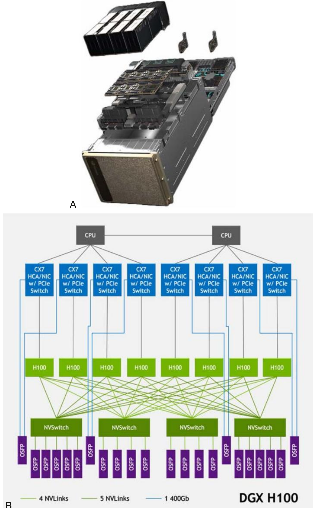
Arm 服务器。 除了 DSA 的广泛采用，WSC 的计算还有两个重要趋势。第一个趋势是 Arm 服务器的兴起。x86 垄断了二十年之后，所有主要的云服务商现在都提供采用 Arm CPU 的服务器。AWS 和阿里巴巴已经自行研发了 Arm CPU 芯片，它们借助自身的巨大用量，也获得了针对自家 WSC 环境进一步优化的机会。与十年前的预期相反，这些 Arm CPU 采用了强大的乱序核，性能可以与同类 x86 CPU 竞争（见 6.9 节的陷阱）。
主存系统。 第二个趋势是主存系统也将发生重大变化。随着半导体工艺继续微缩，CPU 芯片上的核数增长很快。不仅如此，CPU 厂商还把多个芯粒封装在一起，构成 64 核甚至更多核的大型 CPU 插座，每个插座的功耗最高可达 400 W，需要很高的存储带宽。目前的 CPU 集成了内存控制器，通过 DDR 通道直接与 DRAM 内存条通信。用 DRAM 工艺很难设计出更快的收发器，所以每个 DDR 引脚的速率只有 3.2～8.4 Gb/s；而制造 CPU 所用的逻辑工艺可以做出每引脚 64 Gb/s（PCIe）或 100 Gb/s（以太网）的收发器。
于是出现了一种新的趋势：把部分或全部 DRAM 控制器移到一块独立的缓冲芯片上，用 PCIe 速率的链路连接 CPU 和缓冲芯片，就像 21 世纪头十年中期以前的做法那样。缓冲芯片再连接大量 DDR 通道，构成容量大、带宽高的存储系统。与 GPU 和其他 DSA 一样，CPU 封装中也可能集成一定数量的堆叠 HBM DRAM。Compute Express Link（CXL）联盟（https://www.computeexpresslink.org/）推动了片外内存控制器这一趋势，它还为存储系统设计带来了几方面的新机会：
- CXL 缓冲芯片让新型非易失存储技术更容易部署；
- CXL 缓冲芯片还可以让少数几台服务器共享 DRAM 容量（Li 等，2023），就像 Yosemite 滑架让 4 台服务器共享 NIC 一样；
- 采用交换方式的 CXL 互连结构可以实现更大规模的内存分离（disaggregation）。
WSC 的存储
本地存储。 有些 WSC 服务器带有本地存储，如 1～8 个 HDD 或 Flash SSD。企业负载需要本地存储，原因有二：一是有些负载本来就预期在带本地设备的服务器上运行；二是有些负载需要的存储吞吐率，超出了 WSC 网络能为每台服务器提供的水平。例如，8 个基于 NVMe 的 SSD 的峰值读带宽为 400 Gbps。使用本地存储的虚拟机必须清楚：磁盘或服务器一旦出故障，数据就会丢失。如果用本地存储保存非临时性数据，就要由虚拟机软件负责数据的持久性，例如在多个实例之间复制数据。本地存储中的数据用客户提供的密钥加密，这样，同一套物理硬件先后由不同的虚拟机使用，也不会泄露数据。
分布式存储。 大多数 WSC 负载把持久数据存放在分布式存储系统中。云服务商提供多种存储框架，有块、文件和对象三类接口，底层由 HDD 或 SSD 支撑，性能和价格各有不同档次。分布式存储系统有几方面的优点：
- 计算硬件与持久存储在物理上分开，管理更简单；
- 虚拟机可以迁移，也可以出故障后重启，但仍然通过网络连接原来的存储卷或文件系统；
- 数据持久性、故障恢复和灾难恢复、所分配存储容量和吞吐率的扩展，这些责任都转给了云服务商。
磁盘阵列。 实现分布式存储的硬件部件是磁盘阵列，称为 JBOD（just a bunch of disks，简单磁盘捆绑）。图 6.13 是 Meta 的 Grand Canyon JBOD 阵列，一个 4U 机柜中装 72 个 HDD。按每个 HDD 16 TB 计算，这是一台 PB 级的存储设备。图 6.14 是 Meta 的 Lightning JBOF 阵列，它有两个独立的 Flash 托盘，每个托盘 15 个槽位，每个槽位可以装 2 个 M.2 规格（2.5 英寸）的 SSD，或 1 个 U.2 规格（3.5 英寸）的 SSD。
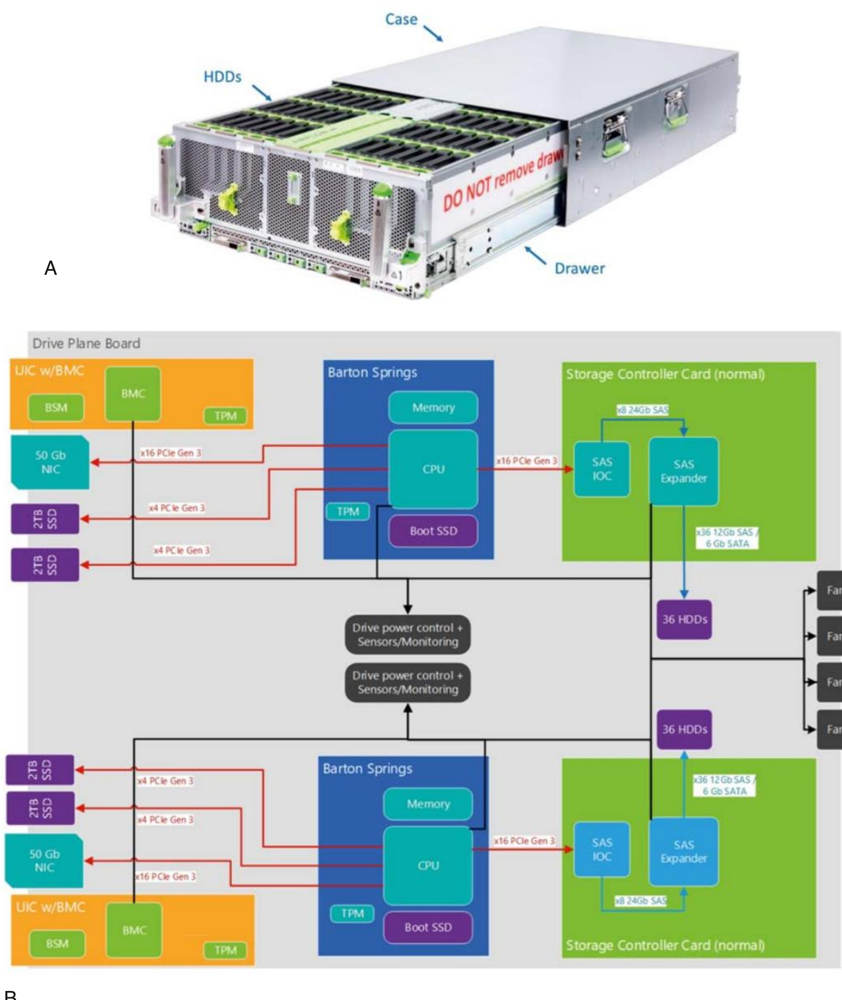
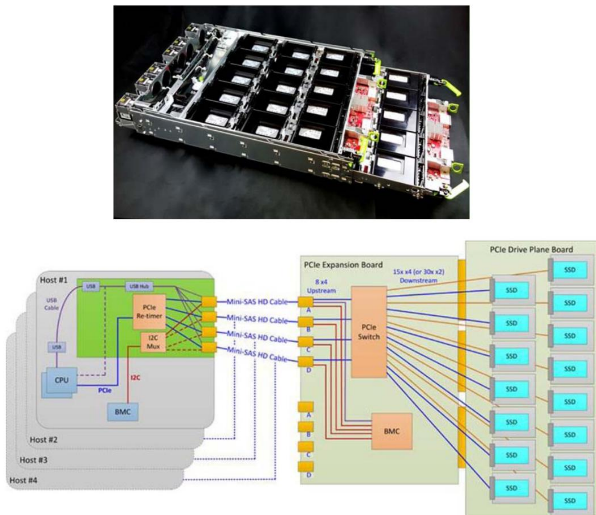
JBOD 和 JBOF 阵列包含保证电源完整性和信号完整性、遥测和管理所需的器件，也支持热插拔；但阵列内部不实现任何可靠性机制，如复制或 RAID 编码。这些阵列用 PCIe 电缆连接机架中位于其上方或下方的服务器，这些服务器通常称为头节点。
由软件保证可靠性。 头节点上运行的 WSC 存储软件实现分布式存储功能，包括跨机架、跨行、跨集群的复制或纠删码。这样，WSC 中发生各种各样的故障时都能恢复数据，包括磁盘故障、机柜故障、服务器硬件或软件故障、机架故障和网络故障。只要副本或编码块分布在整个 WSC 中，无论是一个磁盘出了故障，还是为 JBOD 阵列服务的网络链路出了故障，分布式存储软件都用同样的方式恢复数据。用统一的机制应对多种故障，所需副本或编码块的总数也更少。
存储的调优。 WSC 架构师可以调整存储阵列的部署，针对从热数据快速存储到低成本归档存储的各种用途分别优化，手段有三：
- 一是部署不同类型的 HDD 和 SSD，有的为吞吐率优化，有的为容量优化。
- 二是调整头节点的数量、阵列与头节点之间连接的带宽，以及为连接 WSC 网络而分配的网络带宽。例如，一个 Lightning JBOF 托盘可以由 1 个头节点通过一条 x8 PCIe 连接服务，也可以由 4 个节点通过 4 条 PCIe 连接服务。
- 三是调整容错方案，在速度与存储开销之间折中。3 副本方案可以容忍 2 个磁盘故障，恢复是即时的，但存储开销为 200%。Reed-Solomon 码可以降低容错的开销，但会带来恢复延迟。例如，RS(9,6) 码每 6 个块增加 3 个冗余块，存储开销为 50%，重建任何一个故障块都要读 6 个块；RS(14,10) 码的开销为 40%，但重建任何一个故障块都要读 10 个块。
WSC 网络
WSC 的节点越来越多，每个节点的计算能力和存储能力也越来越强，网络流量因此增长很快。图 6.15 表明，谷歌 WSC 中服务器之间的网络流量在短短 10 年里增加到原来的 235 倍。如果设计时不下功夫，WSC 网络很容易成为性能或成本的瓶颈。
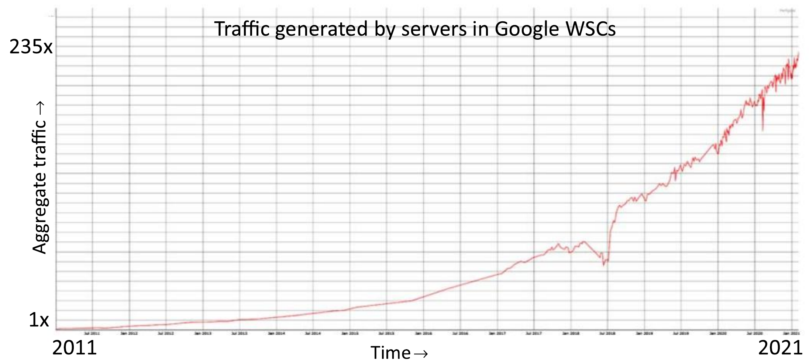
理想的网络与现实。 理想的 WSC 网络是一个完美的交叉开关，能以全对分带宽连接 5 万～10 万个节点，也就是说，任意两个节点组成的所有节点对都能同时以各自 NIC 的全速（如 100 Gbps）通信。此外，WSC 网络还必须有弹性：大型系统中偶尔会有网络链路和交换机发生故障，服务器之间仍应能以高带宽通信。可惜这样的理想交换机并不现实，因为 \(n\) 个端口（节点）的交叉开关，成本按 \(n^2\) 增长。到 21 世纪 10 年代初，人们已经清楚，没有哪种企业级网络方案能够满足 WSC 在规模和成本上的要求。于是，云服务提供商为 WSC 开发了一类新的网络，它结合了超级计算的思想（拓扑结构）和商用网络的思想（交换芯片和传输协议）。
Clos 拓扑。 现代 WSC 网络采用多级拓扑，例如 Clos 拓扑。Clos 拓扑最初是为电路交换的电话网络发明的，以形式化描述其性质的电信专家 Clos 命名（Clos，1953）。这种拓扑用多级交换机来近似一个大型交叉开关的连通性，成本却低得多。图 6.16 是 WSC 中 Clos 网络的一般结构：
- 第一级是每个机架上都有的架顶（TOR，top-of-the-rack）交换机，也称 L1 交换机。每个 TOR 交换机用下行链路连接服务器，用上行链路连接一组叶交换机（L2 交换机）；
- 每个叶交换机都与所有脊交换机（L3 交换机）相连。
这种拓扑是模块化的，增加叶交换机组就能扩展到数万个节点；按照叶到脊的连接方式再增加层级，还可以进一步扩展。附录 L 深入讨论了互连网络，包括拓扑结构和交换机的微结构。
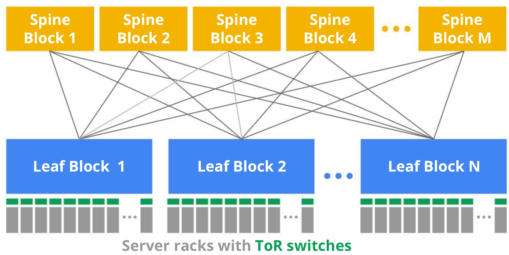
Jupiter 网络。 Clos 拓扑的性价比高，原因是三级交换系统都用同样的商用交换芯片搭建。图 6.17 是谷歌 Jupiter 互连网络所用的交换机。Jupiter 是谷歌自行设计的第五代 WSC 网络，2012 年首次部署（Singh 等，2015）。TOR、叶、脊三种交换机都由一块或多块电路板构成，每块板上有 4 个 16 端口的交叉开关芯片。Jupiter 在最大规模时，对分带宽高达 1.3 Pbit/s（1 Pbit = 1015 位）。相比之下，整个因特网的对分带宽可能只有 0.2 Pbit/s，原因之一是 Jupiter 就是为高对分带宽而建的，因特网则不是。图 6.18 回顾了谷歌五代自研 WSC 网络中各级交换机的演变。
![图 6.17 谷歌 Jupiter Clos 网络的基本构件，取自 Singh 等（2015）的图 13（a）和图 14（b）。图（a）中的 Merchant silicon 是 Jupiter 所用的商用交换芯片，即一个 16 端口、链路速率 40 Gbps 的交叉开关芯片。关键构件是 4U 的 Centauri 机箱，内有 4 个交叉开关芯片，64 个端口都可以从前面板接入。Centauri 用作 TOR（L1）交换机，一种可能的配置是 48 条下行链路连接服务器，16 条上行链路连接网络核心。叶（L2）交换机在谷歌内部也称中间块（middle box，图中 Middle block，MB），由 4 个 Centauri 机箱按两级结构组成，有 64 条上行链路和 64 条下行链路。图（b）是装在一个机架中的 4 个中间块。叶块也称汇聚块（Aggregation block），包含 8 个叶交换机，有 512 条下行链路连接 32 个 TOR 交换机，512 条上行链路连接 256 个脊交换机。每个脊（L3）交换机（Spine block）由 6 个 Centauri 机箱按两级拓扑组成，提供 128 条下行链路，连接 64 个叶块。图内的 up、down 分别指上行、下行。](images/ch06/fig-6-17.png)
图 6.18 谷歌 WSC 部署过的六代网络交换机（Singh 等，2015）。Four-Post CR 使用商用的 512 端口 1 Gbit/s 以太网交换机和 48 端口 1 Gbit/s 以太网架顶（ToR）交换机，一个 WSC 可容纳 20000 台服务器。其余各代都采用自行设计的交换机。Firehose 1.0 的目标是为 10000 台服务器中的每一台提供 1 Gbps 的无阻塞对分带宽，但 ToR 交换机的连通性低，链路出故障时会引发问题。Firehose 1.1 是第一种自行设计、ToR 交换机连通性更好的交换机。Watchtower 和 Saturn 沿用同样的思路，但采用了更新、更快的商用交换芯片。Jupiter 采用 40 Gbps 的链路和交换机，对分带宽超过 1 Pbit/s。
| 数据中心交换机代 | 首次部署 | 商用芯片 | 架顶（ToR）交换机配置 | 边缘汇聚块 | 脊块 | 网络速率 | 主机速率 | 对分带宽 |
|---|---|---|---|---|---|---|---|---|
| Four-Post CRs | 2004 | 厂商产品 | 48 × 1 Gbps | — | — | 10 Gbps | 1 Gbps | 2 Tbps |
| Firehose 1.0 | 2005 | 8 × 10 Gbps；4 × 10 Gbps（ToR） | 上行 2 × 10 Gbps；下行 24 × 1 Gbps | 2 × 32 × 10 Gbps | 32 × 10 Gbps | 10 Gbps | 1 Gbps | 10 Tbps |
| Firehose 1.1 | 2006 | 8 × 10 Gbps | 上行 4 × 10 Gbps；下行 48 × 1 Gbps | 64 × 10 Gbps | 32 × 10 Gbps | 10 Gbps | 1 Gbps | 10 Tbps |
| Watchtower | 2008 | 16 × 10 Gbps | 上行 4 × 10 Gbps；下行 48 × 1 Gbps | 4 × 128 × 10 Gbps | 128 × 10 Gbps | 10 Gbps | n × 1 Gbps | 82 Tbps |
| Saturn | 2009 | 24 × 10 Gbps | 24 × 10 Gbps | 4 × 288 × 10 Gbps | 288 × 10 Gbps | 10 Gbps | n × 10 Gbps | 207 Tbps |
| Jupiter | 2012 | 16 × 40 Gbps | 16 × 40 Gbps | 8 × 128 × 40 Gbps | 128 × 40 Gbps | 10/40 Gbps | n × 10 Gbps / n × 40 Gbps | 1300 Tbps |
超额订阅与拥塞。 Clos 拓扑通常不提供全对分带宽。在上面介绍的 Jupiter 配置中，每个 TOR 交换机的下行带宽与上行带宽之比为 3:1，称为 3:1 的超额订阅比（oversubscription ratio）。任意两台服务器之间都能以链路的最高速率（40 Gbps）通信；但如果一个机架内的所有服务器同时向其他机架的服务器发送数据，每台服务器的有效带宽就只有 1/3。WSC 中各条通信路径还会相互重叠，叶交换机和脊交换机中的拥塞也会限制有效带宽。WSC 运营商用多种技术把超额订阅和拥塞的影响降到最低：
- 把不太可能同时向网络核心全速发送数据的负载放在同一个机架里；
- 尽量把分布式负载的各个进程调度得靠近一些，让它们的大部分流量只经过一个 TOR 交换机或一个叶交换机。但从容错的角度看，这些进程又应当均匀地分散到整个 WSC 中，以保证任何一条链路或一个机架出故障时，对它们可用性的影响都最小，两种考虑互相矛盾；
- 每条连接在多路径的 Clos 网络中走哪条路径，随机选择，使流量尽可能均匀地分布，避免核心出现拥塞。
容错。 图 6.17 中的 Clos 实现本身就是容错的：任意两个 TOR 交换机之间都有多条经过叶块和脊块的路径，叶块或脊块中任何一条链路或一个芯片出故障，都不会使某个 TOR 交换机断开。有些云部署还在每个机架中配置一对冗余的 TOR 交换机，使不能容错的应用不受 TOR 交换机故障或交换机维护停机的影响。
新一代交换芯片。 用更新的商用交换芯片也能设计出类似的 Clos 拓扑。例如，Broadcom 2022 年发布的 Tomahawk 5 芯片，可以用作 64 端口的 800 Gbps 交叉开关，也可以用作 128 端口的 400 Gbps 交叉开关或 256 端口的 200 Gbps 交叉开关。这为芯片的用法提供了更多灵活性：WSC 架构师可以在拓扑的核心部分使用较高的链路速率，在机架内部则使用每条 200 Gbps 的链路，使系统中的服务器端口数最多。
例题 用图 6.17 中的构件搭建 Jupiter 拓扑，最多能支持多少台服务器？假设每台服务器用一条 40 Gbps 链路连接 TOR 交换机，TOR 一级的超额订阅比为 3:1；每个 TOR 与每个中间块之间、每个汇聚块与每个脊块之间，都用一对冗余的 40 Gbps 链路连接。如果 TOR 一级的超额订阅比改为 1:1，容量又是多少？
解答 先回顾图 6.17 中的构件：
- 脊块（L3）向汇聚块提供 128 条 40 Gbps 的下行链路。每个汇聚块都用一对冗余链路连接每个脊块，因此系统中最多有 128/2 = 64 个汇聚块。
- TOR 交换机（L1）有 64 个 40 Gbps 端口。超额订阅比为 3:1 时，有 48 条下行链路连接服务器，16 条上行链路连接汇聚块。用一对冗余链路连接一个中间块，16 条上行链路正好连接一个汇聚块中的 8 个中间块。
- 在汇聚块（L2）一级，每个中间块有 64 条连向 TOR 交换机的下行链路，所以每个中间块可以连接 32 个 TOR 交换机。
系统中最多可容纳的服务器数为：
\[ \begin{aligned} & 64\ \text{个汇聚块} \times 32\ \text{个 TOR 交换机/汇聚块} \\ & \quad \times 48\ \text{台服务器/TOR 交换机} \\ & = 98304\ \text{台服务器} \end{aligned} \]
实际的服务器数要少一些，因为一部分汇聚块要用于对外连接，连到其他 WSC 集群和公共因特网。不过，每条 40 Gbps 链路可以拆成 4 条 10 Gbps 链路，这样就能以较低的单服务器带宽连接更多的服务器。
超额订阅比为 1:1 时，每个 TOR 有 32 条上行链路和 32 条下行链路。汇聚块的设计不变，每个 TOR 交换机与每个中间块之间有 4 条链路，于是每个汇聚块只能容纳 16 个 TOR 交换机。系统中最多可容纳的服务器数为：
\[ \begin{aligned} & 64\ \text{个汇聚块} \times 16\ \text{个 TOR 交换机/汇聚块} \\ & \quad \times 32\ \text{台服务器/TOR 交换机} \\ & = 32768\ \text{台服务器} \end{aligned} \]
要容纳更多的服务器，就得使用更多的汇聚块和更大的脊块。一个机架内的大量服务器同时高速发送数据时，超额订阅可能造成拥塞；但对于给定数量的服务器，它能大大降低所需 WSC 网络的成本。
布线。 WSC 网络中的链路数量很多，电缆成本和布线的复杂性都是必须认真考虑的问题。目前，服务器与 TOR 交换机之间的链路通常是成束的铜缆。例如，一条 200 Gbps 的链路可以是 4 根各 50 Gbps 的电缆，也可以是 2 根各 100 Gbps 的电缆。距离短（1～3 m）、链路速率为 100～400 Gbps 时，铜缆既实用，成本又低。L1、L2、L3 交换机之间的链路则长得多（数十米到数百米），速率也更高，因此首选光缆。光缆往往预先成束，以降低在 WSC 中部署的复杂性。配有 GPU 或其他 DSA 的服务器需要的带宽越来越大，服务器到 TOR 的链路继续使用铜缆也越来越难。下面两种技术可能很快就会在数据中心中广泛部署：
- 有源铜缆，内含中继器，用来延长铜缆的传输距离，提高带宽；
- 与计算芯片共封装在插座内的光收发器，用来降低服务器到 TOR 链路上光收发器的成本和功耗。
增量部署与光路交换。 为一个 WSC 装满 10 万台服务器需要几个月到几年；装满以后，还要不断用最新的硬件逐步升级。叶交换机可以根据需要增加和更换，不影响 WSC 网络的其余部分。脊交换机则带来一个两难的折中：
- 如果随着 WSC 逐步装机而逐步增加脊交换机，每增加一次，都要在叶交换机和脊交换机之间大量重新布线，网络性能会在很长一段时间内下降；
- 如果一开始就装好全部脊交换机，就可以预先为将来的叶交换机布好所有连线。但这样一来，脊交换机用的就是数据中心里最老的技术。假如 Clos 网络起初使用 100 Gbps 链路，把一部分叶交换机升级到 200 Gbps 链路，在脊交换机也升级之前，带宽不会有任何提高。
为了摆脱这一困境，WSC 运营商在叶交换机和脊交换机之间加了一层光路交换机（OCS，optical circuit switch）。OCS 是一种微机电系统（MEMS），可以在几毫秒内重新编程，改变输入光纤与输出光纤之间的连接。OCS 只是反射光，不做包一级的决策，因此与速率无关。图 6.19 表明，谷歌在 Jupiter 网络中用一层 OCS 来方便叶块和脊块的增量部署，每一步都能针对现有的叶交换机采用尽可能好的拓扑（Poutievski 等，2022）。随着时间推移逐步增加叶交换机和脊交换机，布线也都是增量进行的。
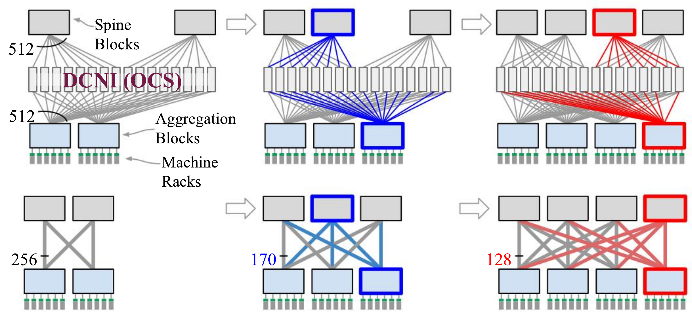
用 OCS 取代脊交换机。 谷歌的工程师把这个思路又推进了一步，用 OCS 完全取代脊交换机。叶交换机只与 OCS 相连，OCS 之间也直接相连。图 6.20 表明，谷歌通过对 OCS 内部的连接编程，来配置叶交换机之间所需的拓扑和连接速率（Poutievski 等，2022）。注意，两个采用 200 Gbps 链路的新叶交换机之间现在可以直接全速通信，尽管它们与其他所有较老的叶交换机通信时仍须降速到 100 Gbps。之所以能这样，是因为 OCS 与脊交换机不同，它只是反射光，与速率无关。
![图 6.20 谷歌 WSC 中用光路交换机取代脊交换机，取自 Poutievski 等（2022）的图 5。OCS 除了支持增量部署，还支持根据流量模式动态配置的直连拓扑。(1) 起初加入汇聚块 A、B，各有 512 条上行链路。(2) 加入有 512 条上行链路的块 C。每个块向外的需求为 50T，均匀分布到其他各块。拓扑工程构成一个均匀的网状拓扑，与均匀的稳态需求矩阵相匹配。(3) 流量工程（TE）根据 (2) 中更细粒度的需求，调整加权代价多路径（WCMP）的权重：A 发往 B 的全部流量（20T）都走直接路径（粉色）；发往 C 的流量（青色）按 5:1（25T:5T）分到直接路径和间接路径（经由 B）上。(4) 加入有 256 条上行链路的块 D（D 中只装了一部分机器机架）。(5) 块 D 扩充到 512 条上行链路。(6) 块 C、D 更新为 200 G 链路速率。图内标注：DCNI（4x failure domains），DCNI（4 个故障域）；512x100Gbps block，512 × 100 Gbps 的块；256x100Gbps block，256 × 100 Gbps 的块；512x200Gbps，512 × 200 Gbps 的块；Block-to-block，块到块（需求矩阵）；100Gbps / 200Gbps block-to-block logical links，100 Gbps / 200 Gbps 的块到块逻辑链路；右下角说明：这些逻辑链路所对应的物理链路条带化地分布在 DCNI 层的所有 OCS 上。](images/ch06/fig-6-20.png)
拓扑工程。 从总体上看，Clos 拓扑中的脊层提供了一种手段，把流量分散、均衡到包含接收节点的叶块的所有链路上。这种分散能很好地处理多种流量模式，即使是最坏情况下的全互换（all-to-all）置换也能应对，代价是脊交换机需要大量光收发器。谷歌的工程师观察到，他们的网络流量模式相对可以预测，与脊层所针对的最坏情况置换模式相去甚远。因此，他们不再分散流量，而是利用 OCS 层做拓扑工程：根据当前的应用模式，每天对叶交换机之间所需的连接和带宽编程。
控制平面与传输协议。 WSC 网络推动了控制平面系统的发展，这类系统负责所有网络设备的配置、路由、管理和实时控制。因特网依靠分布式的独立管理；WSC 的控制平面则不同，它利用逻辑上集中的网络状态视图，对性能、可扩展性、安全性和活性进行优化，效果超出了每次只考虑一条网络连接所能达到的程度（Ferguson 等，2021）。控制平面的决策由网络各级每台交换设备所附的、基于 CPU 的控制器执行。WSC 网络也促使通信应用所用的传输协议迅速演进。WSC 网络是同构的、集中控制的系统，因此可以从交换机中提取拥塞和遥测信息，或者精确测量往返时间，从而构造更好的拥塞控制算法；还可以部署远程直接内存访问（RDMA，remote direct memory access）协议，实现低延迟、低开销的通信。
程序员眼中的 WSC
WSC 体系结构对所有类型的负载都有影响。即使是只用单个 VM 的负载，也需要了解从远程服务器访问存储意味着什么。分布式负载或云原生负载则必须针对 WSC 中大量机器和网络的性能与可靠性特点进行优化。
程序员了解 WSC 的存储层次。图 6.21 给出了 WSC 内部存储层次的延迟、带宽和容量，图 6.22 把同样的数据画成了图。这两幅图基于以下假设：
- 服务器的两个插座合计有 16 个存储通道，都插上 32 GB 的 DDR4-3200 内存条。内存总容量为 512 GB，访问延迟为 100 ns，所有通道合计的峰值内存带宽为 409.6 GB/s。
- 服务器有一块 3.84 TB 的 NVMe Flash 驱动器，最大读带宽为 6.9 GB/s，无负载时的读延迟为 100 μs。服务器还有一块 20 TB 的硬盘，平均访问时间为 5 ms，持续传输率为 300 MB/s。两个 CPU 插座共用一块 100 Gbps 的以太网 NIC。
- 本例中一个机架有 48 台服务器。NIC、交换机和网络软件使 DRAM 和 Flash 的访问延迟增加 100 μs，磁盘的访问延迟增加 500 μs。100 Gbps 的 NIC 把远程接收的带宽限制在 12.5 GB/s，但数据可以来自机架上的多个设备。整个机架的存储容量约为 DRAM 24.5 TB、Flash 184.3 TB、磁盘 960 TB。
- WSC 的一行有 30 个机架，所以一行（阵列）的存储容量是一个机架的 30 倍：DRAM 735 TB、Flash 5.5 PB、磁盘 29.8 PB。在一行之内，多级网络中的网络设备和可能出现的拥塞使 DRAM 的访问延迟增加 200 μs，Flash 增加 300 μs，磁盘增加 1 ms。由于超额订阅，每台服务器远程访问 DRAM、阵列 Flash 或阵列磁盘时可用的带宽限制在 20 Gbps，即 2.5 GB/s。
图 6.21 WSC 存储层次的延迟、带宽和容量。图 6.22 画出了同样的数据。
| 本地 | 机架 | WSC 行 | |
|---|---|---|---|
| DRAM 延迟（μs） | 0.1 | 100.0 | 200.0 |
| Flash 延迟（μs） | 100.0 | 200.0 | 300.0 |
| 磁盘延迟（μs） | 5000.0 | 5500.0 | 6000.0 |
| DRAM 带宽（MB/s） | 409600 | 12500 | 2500 |
| Flash 带宽（MB/s） | 6900 | 12500 | 2500 |
| 磁盘带宽（MB/s） | 300 | 12500 | 2500 |
| DRAM 容量（GB） | 512 | 24500 | 735000 |
| Flash 容量（GB） | 3840 | 184320 | 5500000 |
| 磁盘容量（GB） | 20000 | 960000 | 29800000 |
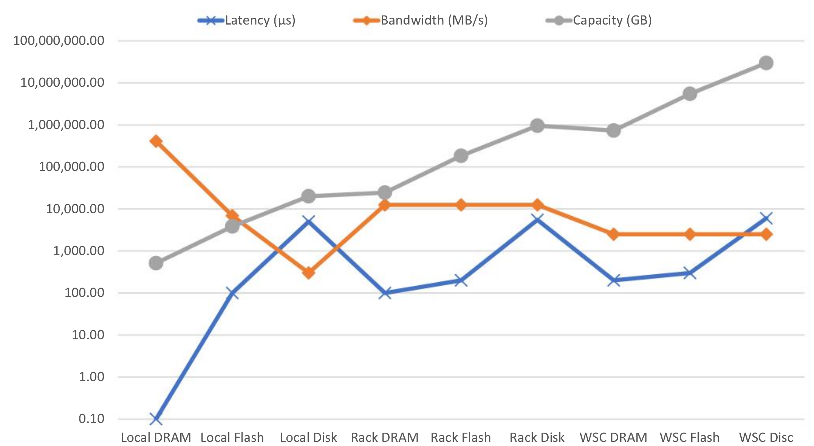
计算与存储分离。 从图 6.21 和图 6.22 可以看出，硬盘和 Flash 设备本身的延迟比网络额外增加的延迟大得多，所以从本地访问改为远程访问，总延迟增加得并不多。如果数据来自多个远程磁盘，远程磁盘带宽比本地磁盘带宽高得多。Flash 的带宽在机架内较高，跨行时较低。正是这些现象推动了 WSC 中计算与存储的分离，这种分离在可扩展性和可靠性上有很大优势。许多分布式应用发起的是无状态的计算任务，这些任务在整个 WSC 范围内调度，输入和输出都依靠分布式（远程）存储。计算很容易扩展；分布式存储系统则通过在存储节点之间对数据分片（sharding）或分区（partitioning），达到所需的容量、带宽和可靠性。计算和存储都可以各自独立地扩展，并从大型 WSC 的并行性中获益。
远程 DRAM 与键值存储。 DRAM 的情况则相反。图 6.21 和图 6.22 表明，无论是在机架内还是在一行之内，网络开销都使远程 DRAM 的访问延迟急剧增加。即便如此，远程 DRAM 和远程 Flash 的访问速度仍是本地磁盘的 10 倍以上。此外，网络抹平了机架内 DRAM、Flash 和磁盘之间的带宽差别，阵列内三者之间的带宽差别也同样被抹平。这些现象促使许多 WSC 应用采用基于 DRAM 或 Flash 的分布式键值存储（KVS，key-value store），以快速访问海量数据。例如，Facebook 社交网络用基于 DRAM 的 Memcache KVS，每天以交互式的延迟为数以亿计的用户提供服务（Nishtala 等，2013）。
RDMA 与 CXL。 从本地 DRAM 到远程 DRAM 的延迟急剧增加，正在推动 WSC 部署新的技术。RDMA 是一种网络技术，可以消除网络软件的开销和不可预测性。网络开销大多来自两个方面：一是超额订阅造成的网络拥塞，二是网络软件的延迟。网络交换机本身的直通（cut-through）延迟只有每跳 200～500 ns。RDMA 使用 Infiniband 和 RoCE 等在 NIC 硬件中实现的网络协议，可以把远程内存访问延迟降到几微秒。新兴的 CXL 交换网络也有望在 WSC 内实现快速的内存共享（解耦，disaggregation）。